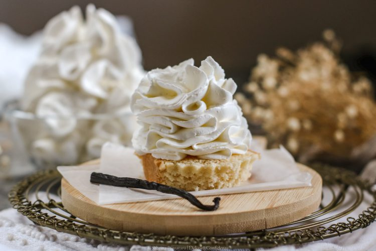

Crema Chantilly Francese
La vera e classica crema Chantilly di origine francese: una preparazione soffice e ariosa composta da panna fresca montata, profumata con vaniglia naturale e dolcificata con zucchero a velo. Delicata, veloce e irresistibile per accompagnare frutta o guarnire dolci.

Ingredienti
Per la Crema Chantilly Tradizionale:
- 500ml di Panna fresca liquida da montare (almeno 35% di grassi)
- 70g - 100g di Zucchero a velo (a seconda della dolcezza desiderata)
- 1 baccello di Vaniglia (o 1 cucchiaino di estratto naturale di vaniglia)
Nota sulla "Chantilly all'Italiana":
- In Italia viene spesso chiamata Chantilly l'unione di Crema Pasticcera e Panna Montata. Quella preparazione è propriamente detta Crema Diplomatica.
Procedimento
- Raffreddamento degli utensili: Riponi la ciotola e le fruste elettriche (o della planetaria) in frigorifero per almeno 20-30 minuti prima dell'uso. Anche la panna deve essere freddissima di frigorifero.
- Aromatazzazione: Versa la panna fredda nella ciotola ed estrai i semini dal baccello di vaniglia incidendolo per il lungo. Aggiungi i semi di vaniglia alla panna.
- Inizio montatura: Inizia a montare la panna con le fruste a velocità media finché non inizia ad addensarsi leggermente e a formare una leggera schiuma.
- Aggiunta dello zucchero: Setaccia lo zucchero a velo direttamente nella panna e continua a montare a velocità medio-alta fino a ottenere una consistenza soda, spumosa e ben ferma.
- Servizio e Conservazione: Utilizza subito la crema con una sac-à-poche oppure riponila in frigorifero coperta fino al momento di servire.
💡 Note Finali e Consigli dell'Mastro Pasticcere
- Ortografia e Origine: Si scrive **Chantilly** (dal nome del famoso Castello di Chantilly in Francia).
- Attenzione a non montare troppo: Se monti la panna oltre il dovuto, il grasso si separerà dal siero trasformandosi in burro dolce alla vaniglia!
- Conservazione: La crema Chantilly va conservata ben coperta in frigorifero e consumata entro 24 ore per mantenere intatta la sua sofficiosità.